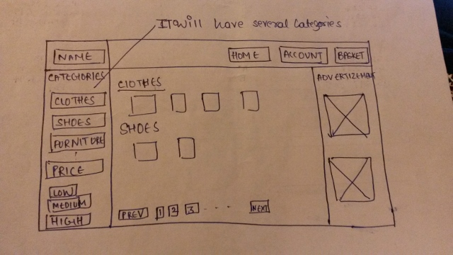
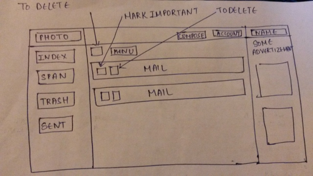
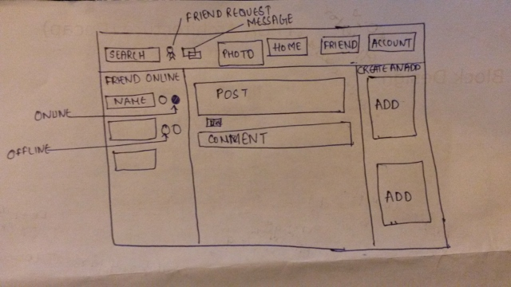

Amazon has the biggest challenge of showing all the important stuffs to the users in a single page which was the tough job. Also amazon has the biggest challenge to make their site reachable to every age and language of people. Amazon solved the problem of people depending on stores for buying their stuff. Amazon also solved the biggest problem of making their site reachable to people with different languages by using visuals which makes it easier to operate. The biggest visual challenge here is make the visual of all the example product in a single home page.
Gmail is the biggest communication network these days. Every person who is little bit familiar with internet has used it atleast once. Gmail is solving many problems connecting peoples with email address and also save the important email by sending unimportant in span folder. Gmail mostly deal with text so it does not have a high visual challenges but some of the visual challenges it face is how to show unread mails. Gmail is mostly dealing how to add all the email addresses user has used until now so he don't have to remember them.
Facebook has become the most famous social site these days. Facebook basically solved the problem of connecting peoples in a grooup and starting a conversation between them using their posts, comments and ideas etc. Facebook has very high visual challenge because it need to show every friend request user is getting, giving suggestion to users for a friend. showing all the images and videos which has been uploaded etc.
